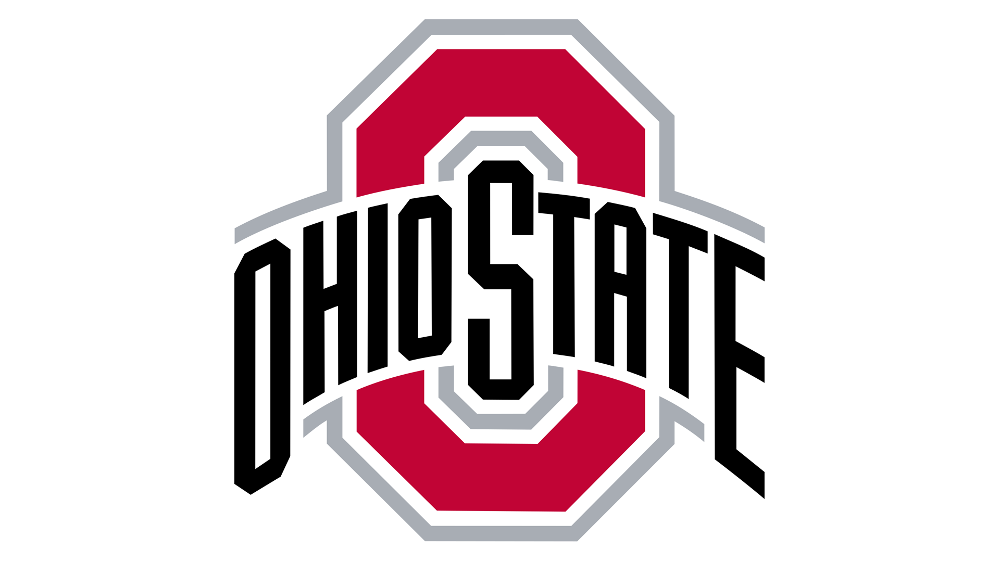
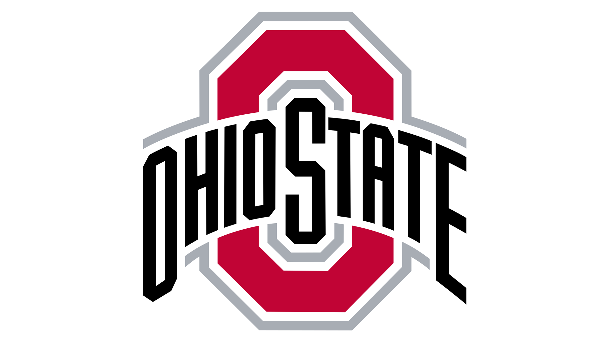

Lauren's Loves and Loathes
About Me
I am Lauren, a User Experience and Design major at the University of Michigan. For my final project, I wanted to showcase all my favorite and least favorite things. I was inspired by my cat, Rocky, who is the biggest hater I have ever met. In honor of him, there are cat facts hidden somewhere in the site, see if you can find them!
Wondering more about my favorite and least favorite things? Well here is a sneak peak! For every category in the Loves page, there will be the equivalent in the Loathes page. While I could expand much further for each category, I chose to pick my top 3 for each. One possible example if colleges was the category could be the University of Michigan but I loathe Ohio State.
 
